So far we’ve covered 3 of the 4 pillars of machine learning: regression, classification, and dimension reduction. This section focuses on the fourth pillar: density estimation.
Definition
Many datasets can’t be model with a single basic distribution as shown in the picture below:
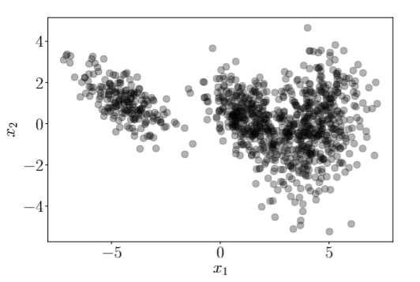
Instead of trying to fit a single distribution to the data that won’t provide a good fit, we can use a mixture model. A mixture model is a convex combination of \(K\) simple distributions, like a normal or a uniform distribution.
In this case, the colors of the formula match the colors of their corresponding components in the image. This shows that a GMM can be used to represented complex distributions with multiple peaks.
EM Algorithm
We can use the EM algorithm to fit a Maximum Likelihood Gaussian Mixture model. The EM algorithm consists of two steps: the Expectation step (E-step) and the Maximization step (M-step).
Before we start, let’s define some notation:
\(x\) is the observed data.
\(N\) is the number of data points.
\(\mu_k\) is the mean of the k-th Gaussian component.
\(\Sigma_k\) is the covariance matrix of the k-th Gaussian component.
\(\pi_k\) is the mixing coefficient of the k-th Gaussian component.
\(r_{nk}\) is the responsibility of the k-th Gaussian component for the n-th data point, with the following formula: \[
r_{nk} = \dfrac{\pi_k \mathcal{N}(x_n \mid \mu_k, \Sigma_k)}{\sum_{k=1}^K \pi_k \mathcal{N}(x_n \mid \mu_k, \Sigma_k)}
\]
\(N_k = \sum_{n=1}^N r_{nk}\) is the total responsibility for the k-th Gaussian component.
The following identities follow from the definition of \(r_{nk}\):
\(\sum_{k=i}^K r_{nk} = 1\) for all \(n\).
\(\sum_{n=1}^N r_{nk} = N_k\) for all \(k\).
\(\sum_{k=i}^K N_k = N\)
\(\sum_{k=i}^K \sum_{k=i}^K r_{nk} = N\)
Now we can use the following steps to fit a Gaussian Mixture Model using the EM algorithm:
Initialize the parameters \(\mu_k\), \(\Sigma_k\), and \(\pi_k\) randomly.
E-step: Compute the responsibilities \(r_{nk}\) for all \(n\) and \(k\). Use the formula above.
M-step: Update the parameters \(\mu_k\), \(\Sigma_k\), and \(\pi_k\) using the following formulas:
\(\mu_k^\text{new} = \dfrac{1}{N_k} \sum_{n=1}^N r_{nk} x_n\) - weighted average of the data points for the k-th Gaussian component based on the responsibilitues.
\(\Sigma_k^\text{new} = \dfrac{1}{N_k} \sum_{n=1}^N r_{nk} (x_n - \mu_k)(x_n - \mu_k)^T\) - weighted covariance matrix of the data points for the k-th Gaussian component based on the responsibilities.
\(\pi_k^\text{new} = \dfrac{N_k}{N}\) - proportion of total responsibilities that belong to the k-th Gaussian component.
While these updates look heuristic, they’re supported by Maximum Likelihood Estimation.
Repeat steps 2 and 3 (EM) until convergence.
Applications of Gaussian Mixture Models
Latent variables
We can re-interpret a Gaussian Mixture Model as latent feature encoder, where \(z_n\) is the latent feature vector for the \(n\)-th data point. This latent variable is typically defined as \(z_n = (r_n1, r_n2, \cdots, r_nK)\)*, a probability vector that indicates the probability that the \(n\)-th data point belongs to each of the \(K\) distributions. In other words, it indicated “belongedness” to each distributions. Note that this is an unsupervised learning algorithm, so we don’t know the true labels of the data points.
*The formula for \(z_n\) can be proven using Bayes’ Theorem.
Stochasitic Clustering
A Gaussian Mixture model can be interpreted as a probabilistic clustering algorithm, where \(r_{nk}\) is the probability that the \(n\)-th data point belongs to the \(k\)-th cluster. Funilly enough, if we let \(\Sigma_k = I \forall k\), we get K-means clustering.
Sampling from a Gaussian Mixture Model
To sample from a Gaussian Mixture Model, we break the process up into two steps:
Sample \(z^{(i)}\) from a categorical distribution with probabilities \(\pi_k\). We want \(z^{(i)}\) to be a one-hot encoded vector, where the \(k\)-th element is 1 and all other elements are 0.
Sample \(x^{(i)}\) from the \(k\)-th Gaussian component that \(z^{(i)}\) encodes for.
Bayesian approach
Sometimes it’s hard to determine what is the ideal value for \(K\) in a GMM, especially in higher dimensions. A Bayesian approach can be used to estimate the number of clusters. The math behind this goes beyond the scope of this chapter, but fortunately, Scikit-Learn has a Bayesian GMM implementation.
Kernel Density Estimation
We can use gaussian mixture models to estimate the probability density function of a random variable. This is called Kernel Density Estimation. It’s a bit more involved than GMM, but it’s a very useful tool for visually understanding the underlying distribution of a dataset.
Not PyTorch
Kernel Density Estimation
The penguin dataset is a popular dataset measuring several characteristics of penguins living on 3 different islands. Let’s use Kernel Density Estimation to get a better understanding of the underlying distribution of the dataset.
Libraries and data
import numpy as npimport pandas as pdimport matplotlib.pyplot as pltimport seaborn as snsfrom itertools import combinationsfrom sklearn.metrics import pairwise_distancesfrom sklearn.decomposition import PCAfrom sklearn.mixture import GaussianMixture, BayesianGaussianMixturecolor_pallete = sns.color_palette("hls", 10)# penguins datasetdf = sns.load_dataset('penguins').dropna()numerical_columns = df.select_dtypes(include=[np.number]).columnscategorical_columns = df.select_dtypes(include=[object]).columns
1D KDE plots
fig, axes = plt.subplots(2, 2)axes = axes.flatten() # Flatten the array for easy iterationfor i, col inenumerate(numerical_columns): sns.kdeplot(data=df, x=col, fill=True, ax=axes[i]) axes[i].set_title(col) axes[i].set_xlabel(col) axes[i].set_ylabel('Density')fig.suptitle('One-Dimensional KDE Plots for Penguin Data', fontsize=16)plt.tight_layout()plt.show()
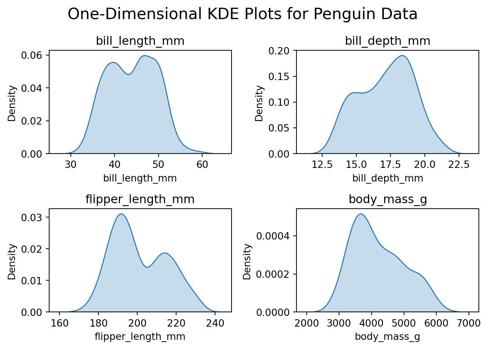
From the 1D KDE plots, we can see that the distributions of the numerical variables are not normal, and most have two peaks. Maybe one corresponds to female penguins and the other to male penguins.
2D KDE plots
fig, axes = plt.subplots(2, 3)axes = axes.flatten() # Flatten the array for easy iteration# Plot each 2D KDE in a subplotfor i, (x, y) inenumerate(combinations(numerical_columns, 2)): sns.kdeplot(data=df, x=x, y=y, fill=True, ax=axes[i]) axes[i].set_title(f'{x}\nvs {y}') axes[i].set_xlabel(x) axes[i].set_ylabel(y)fig.suptitle('Two-Dimensional KDE Plots for Penguin Data', fontsize=16)plt.tight_layout()plt.show()
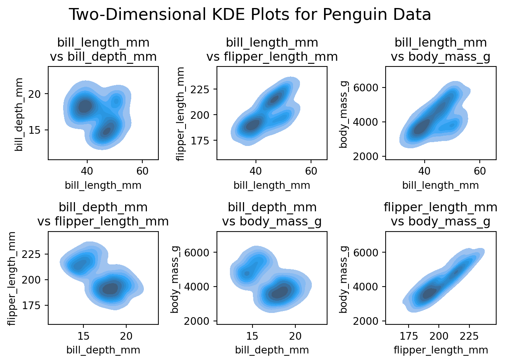
By analyzing the 2D KDE plots, we can see that the that all pair-wise distributions have at least 2 peaks, with some of them having 3 peaks. Maybe the clear 2 peaks correspond to female and male penguins, and the 3 peaks correspond to different species or islands. Let’s try to cluster the data to see if we can find any patterns.
Clustering
Fortunately, Scikit-learn provides an interface for clustering data using Gaussian Mixture Models (GMMs). It also provides an interface for a Bayesian GMM. Let’s fit both and compare the results. The GMM will have 3 components (as we saw 3 peaks in the 2D KDE plots), and the Bayesian GMM will have 9 components. We’ll use the same penguin dataset as before.
The bayesian GMM ended with 5 components, which is less than the original suggestion of 9. This shows that a Bayesian GMM can automatically determine the number of components in the data.
Let’s now compare the incidence between categorical variables and the clusters, beginning with the GMM.
GMM Incidences
for cat in categorical_columns: display( df.groupby(by=['gaussian_clusters', cat]) \ .size()\ .unstack(fill_value=0) )
species
Adelie
Chinstrap
Gentoo
gaussian_clusters
0
2
65
0
1
0
0
119
2
144
3
0
island
Biscoe
Dream
Torgersen
gaussian_clusters
0
0
65
2
1
119
0
0
2
44
58
45
sex
Female
Male
gaussian_clusters
0
31
36
1
58
61
2
76
71
We can observe that the clusters using a GMM match pretty well with the penguin species. This makes sense as different species have different characteristics, which are captured by the GMM. Now let’s take a look at the Bayesian GMM.
Bayesian GMM Incidences
for cat in categorical_columns: display( df.groupby(by=['bayesian_clusters', cat]) \ .size() \ .unstack(fill_value=0) )
species
Adelie
Chinstrap
Gentoo
bayesian_clusters
0
145
5
0
2
0
0
40
3
1
62
0
5
0
0
78
7
0
0
1
8
0
1
0
island
Biscoe
Dream
Torgersen
bayesian_clusters
0
44
60
46
2
40
0
0
3
0
62
1
5
78
0
0
7
1
0
0
8
0
1
0
sex
Female
Male
bayesian_clusters
0
78
72
2
0
40
3
28
35
5
58
20
7
0
1
8
1
0
First, let’s observe that clusters 7 and 8 have one observation each, these are likely outliers. Once again, the clusters match the penguin species pretty well. Moreover, there’s better correspondace with island (other than cluster 0) and cluster 2 is composed only by Males. While the bayesian GMM is a bit more complex, it seems to be a better fit for this dataset.
Testing Variational Autoencoders
So far, we’ve stated that Variational Autoencoders produce a latent space that is normaly distributed. GMM provide us with the tools needed to test this claim. During the semester I trained a VAE on the MNIST dataset with 10 latent features. Let’s see if the latent space is normaly distributed.
Load and prepare data
# read dataencodings = np.loadtxt('data/test_data.csv', delimiter=',')labels = np.loadtxt('data/test_labels.csv', delimiter=',')# put data into dataframedf = pd.DataFrame(encodings)df['label'] = labels# format data in seaborn friendly formatdf_long = df.melt( value_vars=list(range(10)), id_vars=['label'], var_name='dimension', value_name='value')
First, let’s take a look at the encoded space and the covariance matrix.
From the plot on the left we can observe that each latent dimension is normally distributed, centered at. The covariance matrix on the right is essentially the identity matrix, showing that the dimensions are not correlated with each other. Putting these two statements together, each dimension is independently distributed with a standard normal. The VAE has indeed learned a normally distributed latent space.
Just for fun, let’s take a look at the distribution of the latent variables conditioned on the label.
Distribution of the latent space conditioned on the label
for i inrange(10):# encoded values for the given label label_values = df_long[df_long['label'] == i]# covariance matrix for the given label label_cov = df[df['label'] == i].drop(columns=['label']).cov()# plot the distribution save_distribution(label_values, label_cov, title_suffix=f', label = {i}')
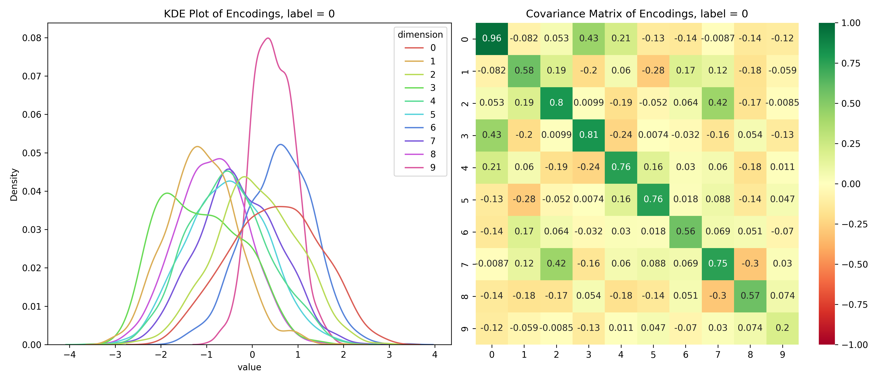 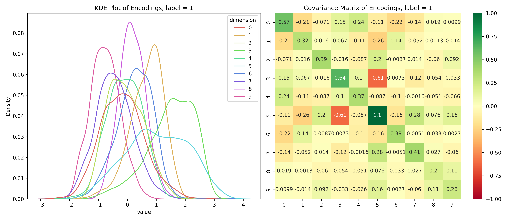 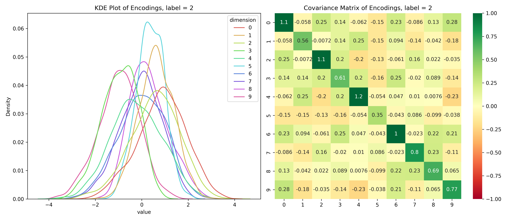 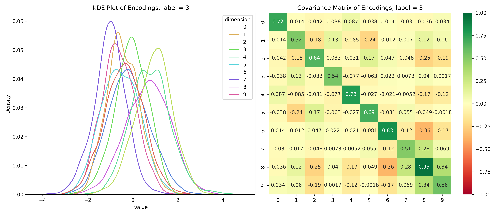 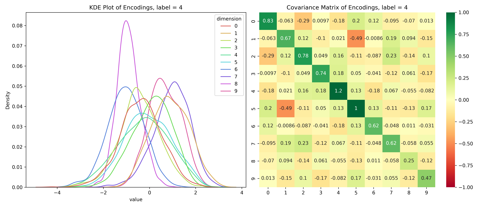 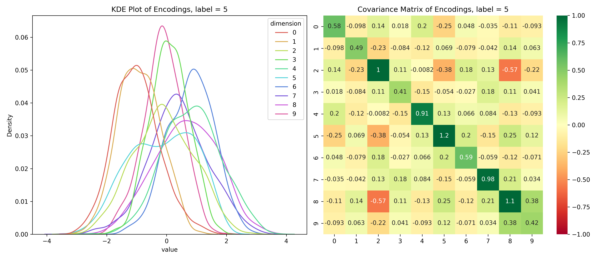 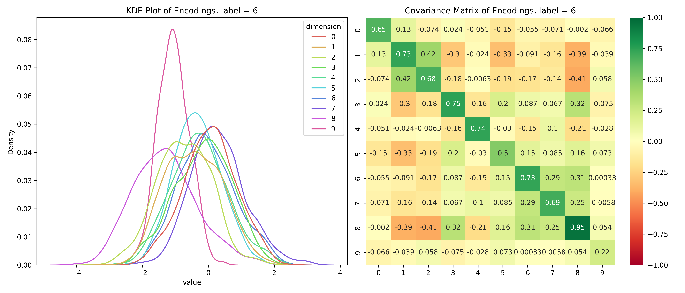 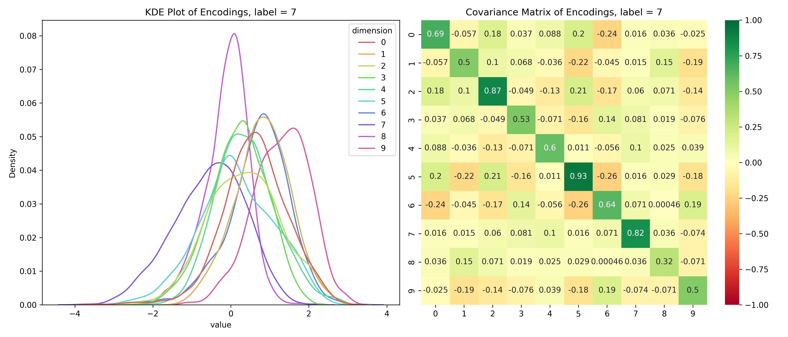 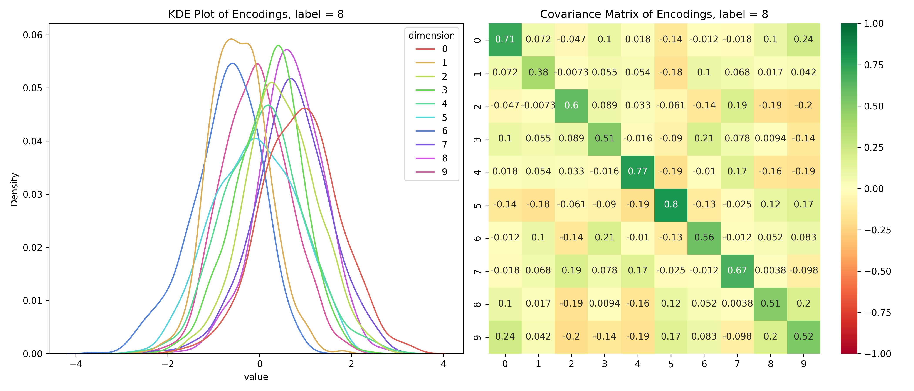 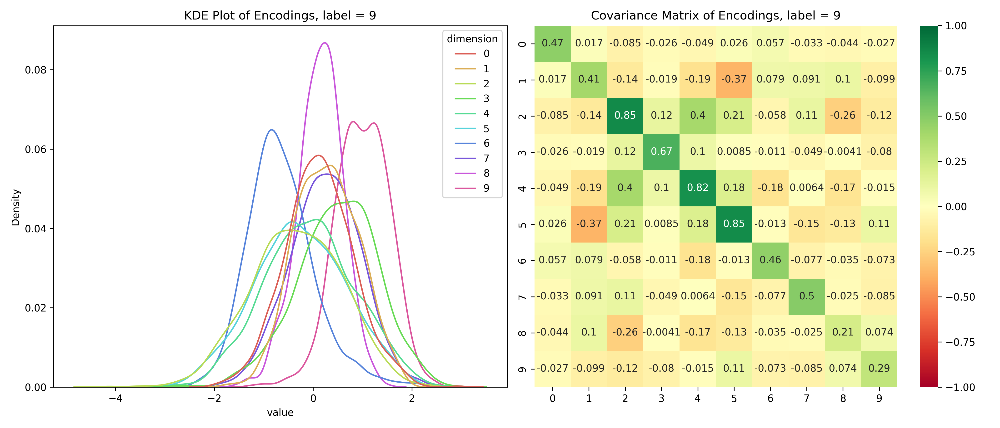
We can see that the distributions are different for different labels and while they look mostly normal, their covariance matrices, show that their dimensions are not independent. So, unconditionally, the dimensions are independent, but conditionally, they’re dependent - the opposite of the assumptions for a Naive Bayes’ Classifier.
In this section we’ve explored Gaussian Mixtures and how they can be used to model the distribution of real data. We’ve also seen how they can be used to perform clustering and classification. This is an important tool to consider when trying to understand the data before applying more advanced techniques.